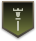
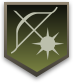
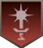

|
Fighter |
Attacker |
A vocation that has balanced offence and defence. Armed with Sword and Shield. |
 |
Hunter |
Attacker |
A vocation that can deal precise damage from a distance. Armed with Bow and able to use special arrows. |
|  |
Priest |
Support |
A vocation that supports the party with recovery and support magick. Armed with Staff. |

|
Shield Sage |
Tank |
A vocation that specializes in defence and limited elemental magick support, attracting enemy attention
away from other party members. Armed with Greatshield. |
|
Sorcerer |
Attacker |
A vocation that commands powerful arcane spells that inflict great damage. Armed with Archistaff. |
 |
Seeker |
Attacker |
A vocation that possesses great speed and maneuverability both on ground and in the air. Armed with Daggers. |
| 
|
Element Archer |
Support |
A vocation that can loose magickal bolts on the enemy and aid the party with recovery and support skills.
Armed with Magick Bow. |
 |
Warrior |
Attacker |
A vocation that can withstand and deliver great physical damage. Armed with Greatsword. |
|
|
Alchemist |
Tank |
A vocation that uses the secret arts of alchemy to inflict damage and debilitations on the enemy. Armed
with Magick Gauntlet. |
 |
Spirit Lancer |
Support |
A vocation that has both support and offensive capabilities. Armed with Spirit Lance. |
|  |
High Scepter |
Attacker |
A vocation that dual-wields magick and sword. Armed with Magick Sword. |